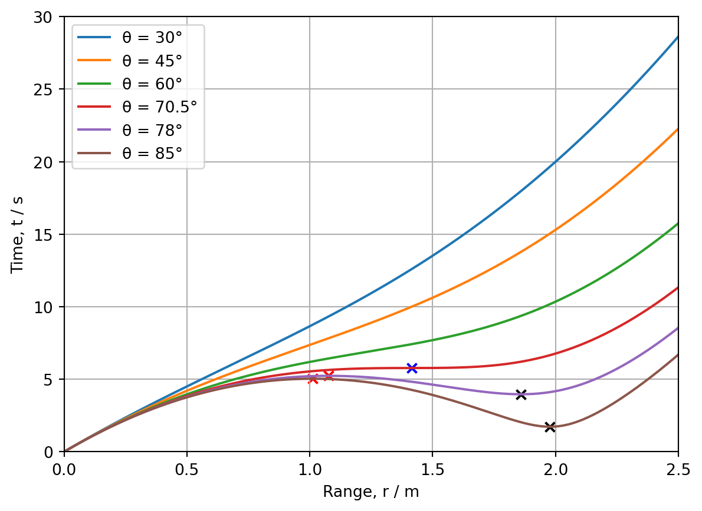

import matplotlib.pyplot as plt
import numpy as npBPhO Computational Challenge 2024: Challenge 7: An Examination of the Phenomenon of Local Maxima and Minima on Range Against Time Graphs in Projectile Motion
Python
BPhO Computational Challenge
Computational Physics
Projectile Motion
The solution to the seventh challenge of the BPhO Computational Challenge 2024, investigating the idea that the range of a projectile from a launch point plotted against time passes through a local maximum and then a minimum.
Introduction
Explained below is the solution to the seventh challenge of the BPhO Computational Challenge 2024, where two graphs will be plotted for a range of angles to investigate the idea that the range of a projectile from a launch point plotted against time passes through a local maximum and then a minimum.
DISCLAIMER: This is just a snippet of our submission for the competition, since the final product was an application 2800 lines of code in length. To see the two minute video submission detailing the entire solution with my partner watch the video here: https://youtu.be/ViT6NdrrbJo .
Setting up the Problem
The problem is composed of two graphs, the first is a range against time graph and the second is a graph of displacement in y for the projectile against displacement in x for the projectile. Six projectiles are entered into the model to demonstrate the different stationary points. The six angles used will be \(\theta=30^{\circ}\), \(\theta=45^{\circ}\), \(\theta=60^{\circ}\), \(\theta=70.5^{\circ}\), \(\theta=78^{\circ}\), and \(\theta=85^{\circ}\).
To begin, the necessary libraries are imported. Matplotlib is used for plotting, numpy is used for mathematical and trigonometric functions, and figure is imported from matplotlib to create two graphs which are displayed.
Range Against Time Graph
Calculating the Range Against Time Curves
Calculating r Coordinates
Below is the rplot function is used to determine the r coordinates of the range against time graph. For simplicity, (and to meet the specifications of the challenge) initial velocity is set to \(10 ms^{-1}\), launch height is set to \(0 m\), and acceleration due to gravity is set to \(10 ms^{-2}\) (instead of the accepted \(9.81 ms^{-2}\)). First, the function converts the angles entered into radians for future use. Then, an empty list for r coordinates is created, and \(r=0\) is appended (since the launch height is \(0 m\)). Finally, a for loop is used to update the list with each range coordinate using the equation \(r=\sqrt{u^2t^2-gt^3u\sin\theta+\frac{1}{4}g^2t^4}\) in the timestep of \(0.01s\) between \(t=0s\) and \(t=2.5s\) as required in the specification for the challenge.
# Function to plot r
def rplot(a):
# Paramaters
u = 10
g = 10
arad = (a * np.pi) / 180
# Sin and cos of the angle
sintheta = np.sin(arad)
# Creates array of r and t valuse
range = []
# Appends array with inital conditions
range.append(0)
# Plots the parabolic path of the projectile with a timestep of 0.01s across an interval of tflight
for i in np.arange(0, 2.6, 0.01):
t = i
r = np.sqrt(u**2 * t**2 - g * t**3 * u * sintheta + 0.25 * g**2 * t**4)
range.append(r)
return rangeCalculating t Coordinates
Similar to the rplot function, the tplot function determines the t coordinates of the range against time graph. An empty array of time coordinates is created and \(t=0\) is appended to this array. Finally, a for loop is used to find the time coordinates that increment in \(0.01s\) intervals between \(t=0s\) and \(t=2.5s\), and these are appended to the time list.
# Function to plot t
def tplot():
# Creates array for time valuse
time = []
# Appends array with inital condition
time.append(0)
# Plots the parabolic path of the projectile with a timestep of 0.01s across an interval of tflight
for i in np.arange(0, 2.6, 0.01):
t = i
time.append(t)
return timeThe following lines of code call the rplot and tplot functions and pass the six angles corresponding to the six different projectiles to be plotted and the list of t values is calculated.
# Passes parameters of angles
r1 = rplot(30)
r2 = rplot(45)
r3 = rplot(60)
r4 = rplot(70.5)
r5 = rplot(78)
r6 = rplot(85)
t = tplot()Calculating the Stationary Points
Minima
The function mint() is used to find the t coordinate of each minima. As before, when the angles are passed to the function, they are converted to radians and the preconditions of \(u=10ms^{-1}\) and \(g=10ms^{-2}\). Then, the equation \(t=\frac{3u}{2g}\sin \theta+\sqrt{\sin^2\theta-\frac{8}{9}}\) is used to find the t coordinate. This is then returned and stored as a variable for future plotting.
# Function to find the t coordinate of the minima
def mint(a):
u = 10
g = 10
a = a * (np.pi/180)
t = ((3 * u) / (2 * g)) * (np.sin(a) + np.sqrt(np.sin(a)**2 - (8/9)))
return tThe angles \(\theta=78^{\circ}\), and \(\theta=85^{\circ}\) are passed specifically since these two projectiles have a minimum point in the range against time graph.
# Calls function and passses angle parameters
mint1 = mint(78)
mint2 = mint(85)The second function minr() is used to find the r coordinate of each minima given t and the angle, which are passed. Similarly, the preconditions are set, the angle is set to radians, and the appropriate equation \(r=\sqrt{u^2t^2-gt^3u\sin\theta+\frac{1}{4}g^2t^4}\) is used to find the r coordinate, which is then returned and stored.
# Function to find the r coordinate of the minima
def minr(a, t):
u = 10
g = 10
a = a * (np.pi/180)
r = np.sqrt(u**2 * t**2 - g * t**3 * u * np.sin(a) + 0.25 * g**2 * t**4)
return rAgain, the angles \(\theta=78^{\circ}\), and \(\theta=85^{\circ}\) are passed specifically since these two projectiles have a minimum point in the range against time graph. The values of t obtained from the previous function are also passed in order to calculate the r coordinate for each minima.
# Calls function and passes angle and t paramaters
minr1 = minr(78, mint1)
minr2 = minr(85, mint2)Maxima
The function maxt() is used to find the t coordinate of each maxima. The initial parameters are set, the angle is converted from degrees to radians and the equation \(t=\frac{3u}{2g}\sin\theta-\sqrt{\sin^2\theta-\frac{8}{9}}\) is used to calculate the t coordinate of the maxima.
# Function to find the t coordinate of the maxima
def maxt(a):
u = 10
g = 10
a = a * (np.pi/180)
t = ((3 * u) / (2 * g)) * (np.sin(a) - np.sqrt(np.sin(a)**2 - (8/9)))
return tNow, the angles \(\theta=78^{\circ}\), and \(\theta=85^{\circ}\) are passed since the projectiles with these angles of projection have maximum points in their range against time graphs.
# Calls function and passes angle parameters
maxt1 = maxt(78)
maxt2 = maxt(85)Next we need to find the r coordinate of each maximum point. Convert from degrees to radians, set initial parameters and calculate r coordinates using the equation \(r=\sqrt{u^2t^2-gt^3u\sin\theta+\frac{1}{4}g^2t^4}\). The same angles are passed along with the t coordinate determined by the previous function.
# Function to find the r coordinate of the maxima
def maxr(a, t):
u = 10
g = 10
a = a * (np.pi/180)
r = np.sqrt(u**2 * t**2 - g * t**3 * u * np.sin(a) + 0.25 * g**2 * t**4)
return r
# Calls the function and passes t coordinates and angles
maxr1 = maxr(78, maxt1)
maxr2 = maxr(85, maxt2)Point of Inflection
stat() finds the t coordinate of the point of inflection by using the equation \(t=\frac{u}{g}\sqrt{2}.\)
# Finds t coordinate of the point of inflection
def stat():
u = 10
g = 10
t = (u / g) * np.sqrt(2)
return t
stat1 = stat()By using the equation \(r=\sqrt{u^2t^2-gt^3u\sin\theta+\frac{1}{4}g^2t^4}\), and by passing the t coordinate of the point of inflection and the angle \(\theta=70.5^{circ}\) the r coordinate of the point of inflection is obtained.
# Finds r coordinate of the point of inflection
def star(a, t):
u = 10
g = 10
a = a * (np.pi / 180)
r = np.sqrt(u**2 * t**2 - g * t**3 * u * np.sin(a) + 0.25 * g**2 * t**4)
return r
star1 = star(70.5, stat1) Plotting Range Against Time
Creates the first figure for the range against time graph.
Then, the range against time graphs for each angle is plotted.
The minima, maxima and point of inflection are plotted using the scatter function.
The parameters of the plot are set. The labels for the x and y axes are set and importantly the limits for t and r are set to match the specification of the challenge.
fig1, ax = plt.subplots()
# Components to be plotted
ax.plot(t, r1, label="θ = 30°")
ax.plot(t, r2, label="θ = 45°")
ax.plot(t, r3, label="θ = 60°")
ax.plot(t, r4, label="θ = 70.5°")
ax.plot(t, r5, label="θ = 78°")
ax.plot(t, r6, label="θ = 85°")
# Plots minima
ax.scatter(mint1, minr1, color="black", marker="x")
ax.scatter(mint2, minr2, color="black", marker="x")
# Plots maxima
ax.scatter(maxt1, maxr1, color="red", marker="x")
ax.scatter(maxt2, maxr2, color="red", marker="x")
# Plots point of inflection
ax.scatter(stat1, star1, color="blue", marker="x")
# Sets the parameters of the plot
ax.set_xlabel("Range, r / m")
ax.set_ylabel("Time, t / s")
ax.set_ylim(0, 30)
ax.set_xlim(0, 2.5)
ax.grid()
ax.legend()
Projectile Position Graph
Calculating x and y Coordinates
Calculating the x Coordinates
The function xplot() plots the x coordinates of the trajectories for graph of the trajectories of each projectile. The angle for each curve to be plotted is passed to the function. The preconditions of velocity and acceleration due to gravity are set as before and the angle is converted into radians. The velocity is then resolved into its horizontal component using the equation \(u_x=u\cos\theta\). An empty array of x coordinates is created and a for loop is used to append each x point to the list with an interval of 0.01s using the equation \(x=u_xt\). This list of x coordinates is then returned for plotting.
def xplot(a):
u = 10
g = 10
arad = (a * np.pi) / 180
ux = u * np.cos(arad)
# Creates an empty arrary for the x and y coordinates of the trajectory
x = []
# Plots the parabolic path of the projectile with a timestep of 0.01s across an interval of tflight
for i in np.arange(0, 3, 0.01):
t = i
x.append(ux * t)
return xThis section of code passes each angle to the function xplot().
# Passes parameters of angles
x1 = xplot(30)
x2 = xplot(45)
x3 = xplot(60)
x4 = xplot(70.5)
x5 = xplot(78)
x6 = xplot(85)Calculating the y Coordinates
The yplot() function plots the y coordinates of the trajectories. The angle for each curve to be plotted is passed to the function. The preconditions are set and the angle is converted into radians. The velocity is then resolved into its vertical component using the equation \(u_y=u\sin\theta\). An empty list of y coordinates is created and a for loop is used to append each y point to the array with an interval of 0.01s using the equation \(y=h+u_yt-\frac{1}{2}gt^2\). This list of y coordinates is then returned.
def yplot(a):
u = 10
g = 10
h = 0
arad = (a * np.pi) / 180
uy = u * np.sin(arad)
# Creates an empty arrary for the x and y coordinates of the trajectory
y = []
# Plots the parabolic path of the projectile with a timestep of 0.01s across an interval of tflight
for i in np.arange(0, 3, 0.01):
t = i
y.append(h + (uy * t) - (0.5 * g * t**2))
return y This section of code passes each angle to the function yplot().
# Passes parameters of angles
y1 = yplot(30)
y2 = yplot(45)
y3 = yplot(60)
y4 = yplot(70.5)
y5 = yplot(78)
y6 = yplot(85)Calculating the Stationary Points
The stax() function finds the x coordinate of each stationary point given the angle and time, which are passed as parameters. The preconditions are determined and the angle is converted into radians. Velocity is resolved into its horizontal component using the equation \(u_x=u\cos\theta\) and then the equation \(x=u_xt\) is used to find the x coordinate as before, which is returned and stored for plotting.
# Function to find x coordinate of each stationary point
def stax(a, t):
u = 10
g = 10
a = a * (np.pi / 180)
ux = u * np.cos(a)
x = ux * t
return xThe below code passes the angles and t coordinates to the function stax().
# Calls function and passes paramters angle and t
stax1 = stax(78, mint1)
stax2 = stax(85, mint2)
stax3 = stax(78, maxt1)
stax4 = stax(85, maxt2)
stax5 = stax(70.5, stat1)The stay() function finds the y coordinate of each stationary point given the angle and time, which are passed. The preconditions are set and the angle is converted into radians. Velocity is resolved into its vertical component and then the equation is used to find the y coordinate with the equations used previously (\(u_y=u\sin\theta\) and \(y=u_yt-\frac{1}{2}gt^2\) respectively).
# Function to find the y coordinate of each stationary point
def stay(a, t):
u = 10
g = 10
a = a * (np.pi / 180)
uy = u * np.sin(a)
y = uy * t - 0.5 * g * t**2
return yThe below code passes the angles and t coordinates to the function stay().
# Calls function and passes paramaters angle and t
stay1 = stay(78, mint1)
stay2 = stay(85, mint2)
stay3 = stay(78, maxt1)
stay4 = stay(85, maxt2)
stay5 = stay(70.5, stat1)Plotting the Position Graph
A second figure is created to display the graph of the trajectories of each projectile.
The trajectories of each projectile corresponding to the different angles of projection are plotted.
The scatter function is used to plot the maxima, minima and points of inflection from the previous graph.
The parameters of the plot are set, the axes are given appropriate labels, the limits of the graph are set to match the specification, and the grid and legend are created.
# Components to be plotted
fig2, ax = plt.subplots()
# Plots the trajectories of the projectiles
ax.plot(x1, y1, label="θ = 30°")
ax.plot(x2, y2, label="θ = 45°")
ax.plot(x3, y3, label="θ = 60°")
ax.plot(x4, y4, label="θ = 70.5°")
ax.plot(x5, y5, label="θ = 78°")
ax.plot(x6, y6, label="θ = 85°")
# Plots stationary points
ax.scatter(stax1, stay1, color="black", marker="x")
ax.scatter(stax2, stay2, color="black", marker="x")
ax.scatter(stax3, stay3, color="red", marker="x")
ax.scatter(stax4, stay4, color="red", marker="x")
ax.scatter(stax5, stay5, color="blue", marker="x")
# Sets the parameters of the plot
ax.set_xlabel("Displacement in x / m")
ax.set_ylabel("Displacement in y / m")
ax.set_ylim(-5, 5)
ax.set_xlim(0, 15)
ax.grid()
ax.legend()